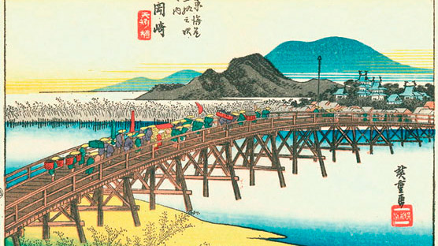
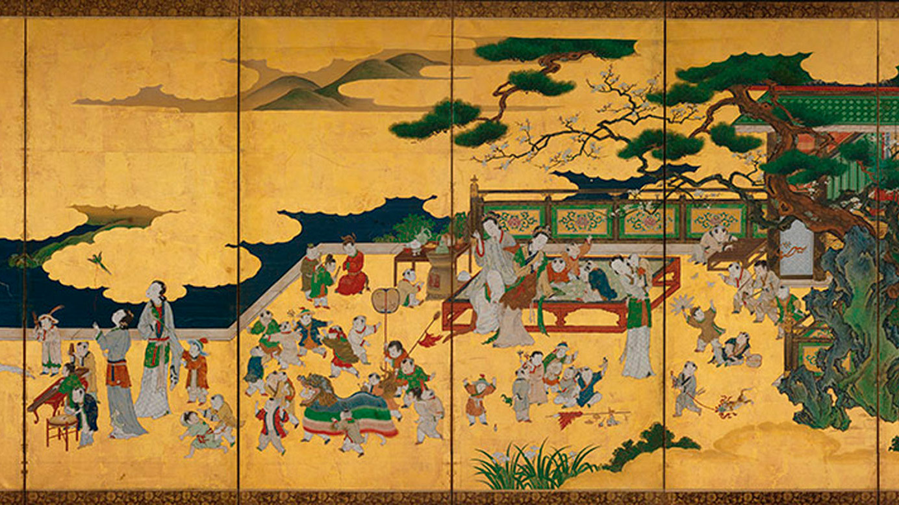

Tòquio és la capital japonesa, està dividida en dues àrees principals: la continental i la insular. L'àrea continental està localitzada en el marge nord-oest de la badia de Tòquio i està enclavada al centre-oest de l'illa de Profund o Honshu, formant part de la regió de Kanto.
1) Els japonesos són extremadament silenciosos.
2) Sens dubte un dels grans contrastos que s'aprecien a Tòquio (i en tot Japó) són les lleis respecte al tabac.
3) Són extremadament ordenats.
4) Hi ha bars amb lloguers de gossos i gats.
5) En Japó la cosmètica és un punt fort, per això les japoneses van molt arreglades.
6) Els banys japonesos incorporen lectors de targeta i fins i tot pantalles per poder escoltar la teva pròpia música o veure fotografies.
7) Al contrari que en altres països, els rodamons japonesos viuen al carrer però no demanen diners i són totalment pacífics.
8) Japó és el país de les màquines expenedores. I el preu dels articles sempre és el mateix.
L'origen de Tòquio va ser a la fi del segle XII, fins que unes restes tretes a la llum durant unes obres al carrer Yayoy, van revelar que la zona va estar habitada des del segle III a. de C. A finals del segle XII està documentada l'existència d'un llogaret de pescadors anomenat Yedo o Edo, situat en una plana baixa inundable per la marea en la desembocadura del riu Sumida.
En 1457, un guerrer anomenat Ota Dokuan, va construir un recinte fortificat entorn del qual es va concentrar la població de l'aiguamoll. De 1486 a 1524 Hozio Uzitsuma va unificar la província i va crear un estat propi amb la capital en Odawara.
En 1542 van arribar a Japó els primers occidentals, comerciants i missioners espanyols i portuguesos. Els japonesos els van acollir favorablement. Hideyoshi, que havia estat nomenat shogun "general" per l'emperador, va decidir traslladar la capital shogunal des de Kyoto a Edo i va manar al seu fill Yyeyasu per conquistar-la.
En 1603, la fortalesa d'Edo i el seu llogaret va ser conquistat per Yyeyasu Tokugawa. Yyeyasu, un petit aristòcrata provincià, va unificar Japó, va aixafar als dissidents senyors feudals i va donar nom a la dinastia que governaria a la ciutat i a Japó durant segle i mig.
Yyeyasu va obligar als senyors feudals "daimyos" així com als samurais al fet que fixessin la seva residència a la nova capital amb les seves famílies almenys sis mesos a l'any, la qual cosa va propiciar un gran desenvolupament urbanístic. Es van sanejar i van dessecar els aiguamolls i es van construir canals que van afavorir el comerç.
Des de llavors es diu que Japó té dues capitals. El creixement de la nova capital va ser impressionant i en 1787 ja tenia més d'1.300.000 habitants. Abans, en 1657, havia tingut lloc l'anomenat Gran Incendi d'Edo en el qual van morir al voltant de cent mil persones.
L'era Tokugawa, va ser feudal i aïllacionista (en 1624 es va expulsar a tots els estrangers de Japó, en 1633 es va prohibir als japonesos abandonar l'arxipèlag sota pena de mort i en 1637 es van prohibir els navilis de gran tonatge perquè no poguessin sortir a alta mar), però va preparar a Japó per a la revolució Meiji.
En 1868 s'inicia la transformació del país. Edo va passar a ser la capital de l'imperi unificat Meiji. L'emperador es va mudar a la fortalesa d'Edo convertint-ho en el Palau Imperial del Japó i va canviar de nom a la ciutat d'Edo pel de Tòquio, que significa "Capital de l'Est". Així mateix va abolir tots els privilegis feudals i va obrir Japó a la modernització econòmica i administrativa i, per a això, va comptar amb els samurais.
Terratrèmols seguits de grans incendis han marcat la història de Tòquio. En 1855 la ciutat va ser destruïda per un gran incendi i va haver de ser reconstruïda sobre la plana i el delta Sumida. En 1872 un altre incendi de gran magnitud va destruir els districtes de Ginza i Marunouchi, els quals van ser reconstruïts posteriorment segons els models arquitectònics occidentals.
En 1918 va tenir lloc l'aixecament de l'arròs, tolerància que va acabar amb l'auge del poder militar de caràcter expansionista. A la Primera Guerra Mundial Japó va estar de costat dels aliats per quedar-se amb les possessions alemanyes
En 1923 el Gran Terratrèmol de Kanto va destruir gairebé la meitat de la ciutat. La reconstrucció de Tòquio va ser molt costosa i es va perllongar durant set anys, seguint el model d'una ciutat occidental. Durant la Segona Guerra Mundial l'aviació nord-americana va reduir Tòquio a enderrocs causant més de 80.000 morts. La rendició de Japó es va signar en la badia de Tòquio a bord del famós cuirassat Missouri.
Acabada la guerra, el 2 de setembre de 1945, Tòquio va ser ocupada militarment i va passar a ser governada per les Forces Aliades fins a abril de 1952. Gràcies a l'ajuda prestada pels Estats Units d'Amèrica la reconstrucció després de la guerra va ser espectacular, les dècades del 50 i 60 són les del "miracle japonès".